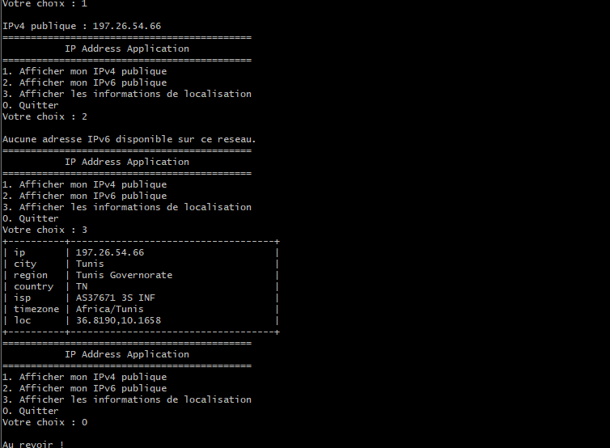
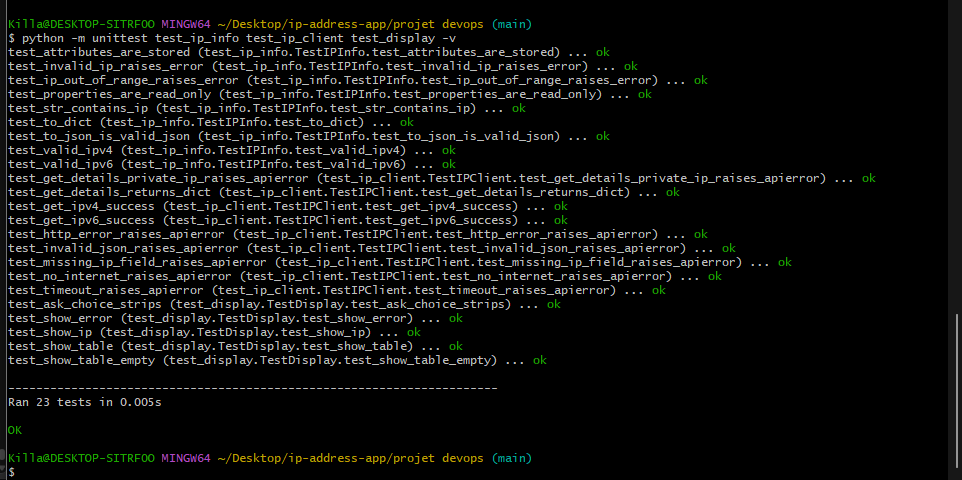
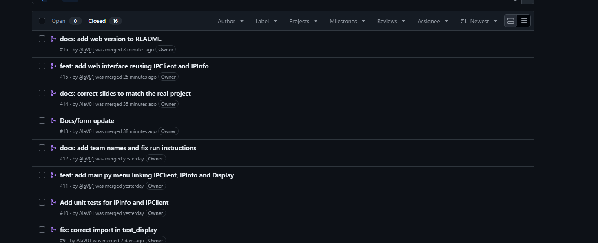

203.0.113.42
Mini-projet POO Python et DevOps/DevNet : afficher l’adresse IP publique de son ordinateur grâce à une API REST.
Groupe : Ala Naffoussi (Scrum Leader), Islem Jlejla, Ranim Lassoued, Hazem Jmili
api.ipify.org renvoie l’IPv4 publique.
api64.ipify.org renvoie l’IPv6, ou l’IPv4 si le réseau n’a pas d’IPv6.
Renvoie en JSON la ville, la région, le pays, le fournisseur (clé org), le fuseau horaire et la position.
Appelle les API, lève APIError en cas de problème réseau.
Représente une adresse : ip, ip_version, to_dict(), to_json().
Menu, tableau et messages d’erreur dans la console.
main.py crée un objet de chaque classe et les relie : le client récupère les données, IPInfo les valide et les stocke, Display les affiche. Chaque classe a une seule responsabilité.
class IPInfo:
def __init__(self, ip, city=None, ..., loc=None):
try:
self.__ip = str(ipaddress.ip_address(ip))
except ValueError:
raise ValueError("Adresse IP invalide")
self.__city = city # attribut privé
@property
def ip(self): # lecture seule
return self.__ip
Encapsulation : attributs privés et propriétés en lecture seule. Une adresse invalide ne devient jamais un objet IPInfo.
| Membre | Partie | Fichiers |
|---|---|---|
| Ala Naffoussi | Scrum Leader, dépôt, revues et fusions des Pull Requests, fiche Cisco, programme principal, tests unitaires, version web | main.py, web.py, test_ip_info.py, test_ip_client.py, README.md, docs/ |
| Islem Jlejla | Client API et gestion des erreurs | ip_client.py |
| Ranim Lassoued | Modèle d’adresse IP | ip_info.py |
| Hazem Jmili | Affichage, tests de l’affichage, présentation | display.py, test_display.py, presentation/ |

Démo en direct : python main.py, choix 1, 2 puis 3.
Sans IPv6 sur le réseau, le programme l’indique au lieu d’afficher l’IPv4 deux fois. Capture d’écran de secours à gauche.
python web.py ouvre une page dans le navigateur, avec les mêmes données.IPClient et IPInfo sans les modifier : seule l’interface change.http.server), rien à installer.Démo en direct dans le navigateur, avec une capture d’écran de secours.

23 tests : IPInfo (9), IPClient (9), Display (5). Chaque test utilise assert pour vérifier un résultat. unittest.mock remplace l’appel réseau par une fausse réponse : les tests fonctionnent sans internet.
feature/ip-model, feature/ip-client, feature/display, feature/main, docs/readme.feat:, fix:, test:, refactor:, docs:.main. Personne ne pousse directement sur main.Voir le dépôt : github.com/AlaV01/ip-address-app (historique des commits et onglet Pull Requests).

16 Pull Requests fusionnées, aucune ouverte : une par branche. Les commits, commentaires et revues sont visibles dans chaque Pull Request sur GitHub.
| Pull Request | Problème trouvé à la relecture |
|---|---|
Modèle IPInfo | ip_info.py ajouté deux fois dans le dépôt : doublon supprimé par une PR de correction |
Client IPClient | Changements demandés : fichiers au mauvais endroit et requirements.txt qui écrasait celui de main |
Affichage Display | Test cassé : import depuis src.display, dossier qui n’existe pas |
| Fichiers du client | Fusionnés à la racine : déplacés dans projet devops/ avec git mv |
| Difficulté | Solution |
|---|---|
Fichiers au mauvais endroit (src/, racine) alors que le groupe utilise projet devops/ | git mv puis correction des imports |
api64.ipify.org renvoie une IPv4 sans réseau IPv6 | Vérifier ip_version == 6 et afficher un message clair |
Fournisseur renvoyé sous la clé org | Construire IPInfo avec isp=data.get("org") |
| Tests qui dépendent d’internet | unittest.mock pour simuler les réponses de l’API |
| Valeurs longues (fournisseur) qui dépassent la colonne du tableau | Limite connue, à corriger dans display.py (backlog) |
main.py et de la version web.assert et des mocks, travailler avec des branches et des Pull Requests.Merci. Des questions ?